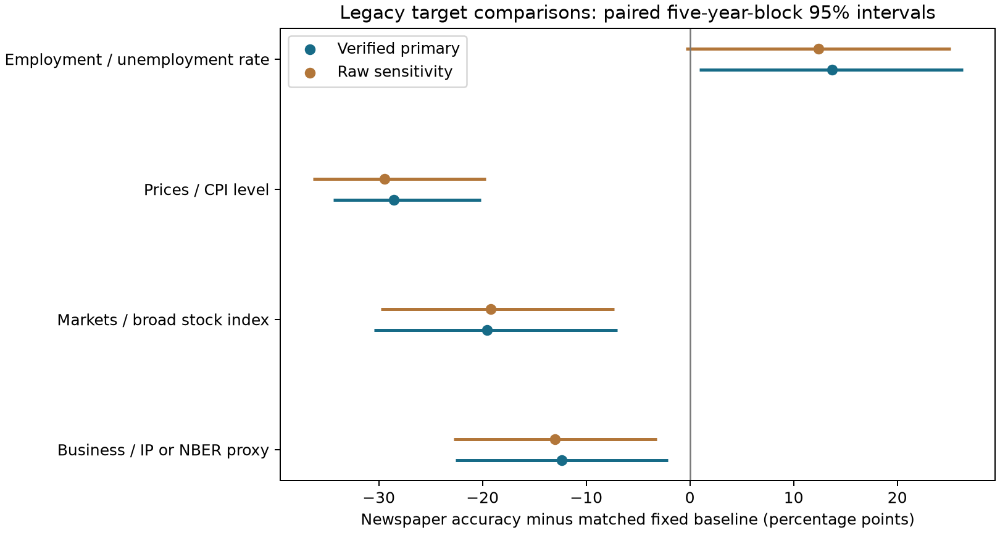

Paired descriptive newspaper-minus-baseline accuracy gaps. Verified annual 1900–2010 exports are primary; raw exports are sensitivity. No model fitting or source validation. Machine topics and horizons do not establish semantic correctness.

| source_set | cohort | topic | weighting | n_claims | n_articles | n_months | first_year | last_year | block_years | n_blocks | hit_rate | fixed_baseline | gap_vs_fixed | low | high | valid_draws |
|---|---|---|---|---|---|---|---|---|---|---|---|---|---|---|---|---|
| verified | all_legacy | general_business | article | 109582 | 58115 | 1287 | 1900 | 2010 | 5 | 23 | 0.41288 | 0.53654 | -0.12365 | -0.22585 | -0.02093 | 5000 |
| verified | all_legacy | markets | article | 25546 | 16159 | 1180 | 1900 | 2010 | 5 | 23 | 0.38700 | 0.58287 | -0.19588 | -0.30465 | -0.07012 | 5000 |
| verified | all_legacy | prices | article | 22531 | 16098 | 1111 | 1913 | 2010 | 5 | 21 | 0.45957 | 0.74531 | -0.28574 | -0.34402 | -0.20154 | 5000 |
| verified | all_legacy | employment | article | 18196 | 13453 | 713 | 1948 | 2010 | 5 | 14 | 0.36682 | 0.22955 | 0.13727 | 0.00938 | 0.26318 | 5000 |
| source_set | cohort | topic | weighting | n_claims | n_articles | n_months | first_year | last_year | block_years | n_blocks | hit_rate | fixed_baseline | gap_vs_fixed | low | high | valid_draws |
|---|---|---|---|---|---|---|---|---|---|---|---|---|---|---|---|---|
| verified | all_legacy | general_business | article | 109582 | 58115 | 1287 | 1900 | 2010 | 5 | 23 | 0.41288 | 0.53654 | -0.12365 | -0.22585 | -0.02093 | 5000 |
| verified | all_legacy | general_business | month | 109582 | 58115 | 1287 | 1900 | 2010 | 5 | 23 | 0.46867 | 0.59575 | -0.12709 | -0.18353 | -0.07283 | 5000 |
| verified | all_legacy | markets | article | 25546 | 16159 | 1180 | 1900 | 2010 | 5 | 23 | 0.38700 | 0.58287 | -0.19588 | -0.30465 | -0.07012 | 5000 |
| verified | all_legacy | markets | month | 25546 | 16159 | 1180 | 1900 | 2010 | 5 | 23 | 0.39419 | 0.53068 | -0.13649 | -0.19877 | -0.07673 | 5000 |
| verified | all_legacy | prices | article | 22531 | 16098 | 1111 | 1913 | 2010 | 5 | 21 | 0.45957 | 0.74531 | -0.28574 | -0.34402 | -0.20154 | 5000 |
| verified | all_legacy | prices | month | 22531 | 16098 | 1111 | 1913 | 2010 | 5 | 21 | 0.44035 | 0.64586 | -0.20551 | -0.29095 | -0.11179 | 5000 |
| verified | all_legacy | employment | article | 18196 | 13453 | 713 | 1948 | 2010 | 5 | 14 | 0.36682 | 0.22955 | 0.13727 | 0.00938 | 0.26318 | 5000 |
| verified | all_legacy | employment | month | 18196 | 13453 | 713 | 1948 | 2010 | 5 | 14 | 0.31176 | 0.24379 | 0.06797 | -0.00660 | 0.14630 | 5000 |
| verified | all_legacy | all_topics | article | 175855 | 76851 | 1317 | 1900 | 2010 | 5 | 23 | 0.40899 | 0.53597 | -0.12698 | -0.21675 | -0.03465 | 5000 |
| verified | all_legacy | all_topics | month | 175855 | 76851 | 1317 | 1900 | 2010 | 5 | 23 | 0.44583 | 0.57792 | -0.13209 | -0.18349 | -0.08445 | 5000 |
| verified | non_NBER | general_business | article | 108535 | 57488 | 1098 | 1919 | 2010 | 5 | 20 | 0.41166 | 0.53699 | -0.12533 | -0.23433 | -0.01963 | 5000 |
| verified | non_NBER | general_business | month | 108535 | 57488 | 1098 | 1919 | 2010 | 5 | 20 | 0.45265 | 0.60172 | -0.14907 | -0.20759 | -0.09858 | 5000 |
| verified | non_NBER | markets | article | 25546 | 16159 | 1180 | 1900 | 2010 | 5 | 23 | 0.38700 | 0.58287 | -0.19588 | -0.30465 | -0.07012 | 5000 |
| verified | non_NBER | markets | month | 25546 | 16159 | 1180 | 1900 | 2010 | 5 | 23 | 0.39419 | 0.53068 | -0.13649 | -0.19877 | -0.07673 | 5000 |
| verified | non_NBER | prices | article | 22531 | 16098 | 1111 | 1913 | 2010 | 5 | 21 | 0.45957 | 0.74531 | -0.28574 | -0.34402 | -0.20154 | 5000 |
| verified | non_NBER | prices | month | 22531 | 16098 | 1111 | 1913 | 2010 | 5 | 21 | 0.44035 | 0.64586 | -0.20551 | -0.29095 | -0.11179 | 5000 |
| verified | non_NBER | employment | article | 18196 | 13453 | 713 | 1948 | 2010 | 5 | 14 | 0.36682 | 0.22955 | 0.13727 | 0.00938 | 0.26318 | 5000 |
| verified | non_NBER | employment | month | 18196 | 13453 | 713 | 1948 | 2010 | 5 | 14 | 0.31176 | 0.24379 | 0.06797 | -0.00660 | 0.14630 | 5000 |
| verified | non_NBER | all_topics | article | 174808 | 76322 | 1274 | 1900 | 2010 | 5 | 23 | 0.40809 | 0.53631 | -0.12822 | -0.21977 | -0.03579 | 5000 |
| verified | non_NBER | all_topics | month | 174808 | 76322 | 1274 | 1900 | 2010 | 5 | 23 | 0.43098 | 0.57639 | -0.14541 | -0.19598 | -0.09772 | 5000 |
| verified | machine_stated | general_business | article | 53800 | 32818 | 1165 | 1900 | 2010 | 5 | 23 | 0.39993 | 0.48854 | -0.08861 | -0.17177 | -0.00851 | 5000 |
| verified | machine_stated | general_business | month | 53800 | 32818 | 1165 | 1900 | 2010 | 5 | 23 | 0.45834 | 0.56051 | -0.10217 | -0.15068 | -0.05619 | 5000 |
| verified | machine_stated | markets | article | 11805 | 8276 | 954 | 1900 | 2010 | 5 | 23 | 0.37669 | 0.51746 | -0.14077 | -0.21934 | -0.05013 | 5000 |
| verified | machine_stated | markets | month | 11805 | 8276 | 954 | 1900 | 2010 | 5 | 23 | 0.36790 | 0.46569 | -0.09778 | -0.14754 | -0.04879 | 5000 |
| verified | machine_stated | prices | article | 10828 | 8288 | 907 | 1913 | 2010 | 5 | 21 | 0.45111 | 0.73092 | -0.27981 | -0.32932 | -0.21003 | 5000 |
| verified | machine_stated | prices | month | 10828 | 8288 | 907 | 1913 | 2010 | 5 | 21 | 0.42968 | 0.60098 | -0.17131 | -0.25074 | -0.07914 | 5000 |
| verified | machine_stated | employment | article | 9260 | 7463 | 651 | 1948 | 2010 | 5 | 14 | 0.34235 | 0.20054 | 0.14180 | 0.03507 | 0.25897 | 5000 |
| verified | machine_stated | employment | month | 9260 | 7463 | 651 | 1948 | 2010 | 5 | 14 | 0.29249 | 0.22139 | 0.07110 | 0.00183 | 0.14568 | 5000 |
| verified | machine_stated | all_topics | article | 85693 | 45598 | 1237 | 1900 | 2010 | 5 | 23 | 0.39197 | 0.48644 | -0.09447 | -0.16737 | -0.02218 | 5000 |
| verified | machine_stated | all_topics | month | 85693 | 45598 | 1237 | 1900 | 2010 | 5 | 23 | 0.43382 | 0.53687 | -0.10305 | -0.14554 | -0.06267 | 5000 |
| verified | machine_stated_non_NBER | general_business | article | 53569 | 32662 | 1066 | 1919 | 2010 | 5 | 20 | 0.39934 | 0.48862 | -0.08928 | -0.17436 | -0.00679 | 5000 |
| verified | machine_stated_non_NBER | general_business | month | 53569 | 32662 | 1066 | 1919 | 2010 | 5 | 20 | 0.45288 | 0.56567 | -0.11279 | -0.16406 | -0.06742 | 5000 |
| verified | machine_stated_non_NBER | markets | article | 11805 | 8276 | 954 | 1900 | 2010 | 5 | 23 | 0.37669 | 0.51746 | -0.14077 | -0.21934 | -0.05013 | 5000 |
| verified | machine_stated_non_NBER | markets | month | 11805 | 8276 | 954 | 1900 | 2010 | 5 | 23 | 0.36790 | 0.46569 | -0.09778 | -0.14754 | -0.04879 | 5000 |
| verified | machine_stated_non_NBER | prices | article | 10828 | 8288 | 907 | 1913 | 2010 | 5 | 21 | 0.45111 | 0.73092 | -0.27981 | -0.32932 | -0.21003 | 5000 |
| verified | machine_stated_non_NBER | prices | month | 10828 | 8288 | 907 | 1913 | 2010 | 5 | 21 | 0.42968 | 0.60098 | -0.17131 | -0.25074 | -0.07914 | 5000 |
| verified | machine_stated_non_NBER | employment | article | 9260 | 7463 | 651 | 1948 | 2010 | 5 | 14 | 0.34235 | 0.20054 | 0.14180 | 0.03507 | 0.25897 | 5000 |
| verified | machine_stated_non_NBER | employment | month | 9260 | 7463 | 651 | 1948 | 2010 | 5 | 14 | 0.29249 | 0.22139 | 0.07110 | 0.00183 | 0.14568 | 5000 |
| verified | machine_stated_non_NBER | all_topics | article | 85462 | 45453 | 1180 | 1900 | 2010 | 5 | 23 | 0.39159 | 0.48656 | -0.09496 | -0.16834 | -0.02236 | 5000 |
| verified | machine_stated_non_NBER | all_topics | month | 85462 | 45453 | 1180 | 1900 | 2010 | 5 | 23 | 0.42946 | 0.53911 | -0.10965 | -0.15143 | -0.06957 | 5000 |
| source_set | cohort | topic | weighting | n_claims | n_articles | n_months | first_year | last_year | block_years | n_blocks | hit_rate | fixed_baseline | gap_vs_fixed | low | high | valid_draws |
|---|---|---|---|---|---|---|---|---|---|---|---|---|---|---|---|---|
| verified | all_legacy | general_business | article | 109582 | 58115 | 1287 | 1900 | 2010 | 2 | 56 | 0.41288 | 0.53654 | -0.12365 | -0.22139 | -0.03322 | 5000 |
| verified | all_legacy | general_business | article | 109582 | 58115 | 1287 | 1900 | 2010 | 5 | 23 | 0.41288 | 0.53654 | -0.12365 | -0.22585 | -0.02093 | 5000 |
| verified | all_legacy | general_business | article | 109582 | 58115 | 1287 | 1900 | 2010 | 10 | 12 | 0.41288 | 0.53654 | -0.12365 | -0.24928 | -0.00255 | 5000 |
| verified | all_legacy | general_business | month | 109582 | 58115 | 1287 | 1900 | 2010 | 2 | 56 | 0.46867 | 0.59575 | -0.12709 | -0.18526 | -0.06834 | 5000 |
| verified | all_legacy | general_business | month | 109582 | 58115 | 1287 | 1900 | 2010 | 5 | 23 | 0.46867 | 0.59575 | -0.12709 | -0.18353 | -0.07283 | 5000 |
| verified | all_legacy | general_business | month | 109582 | 58115 | 1287 | 1900 | 2010 | 10 | 12 | 0.46867 | 0.59575 | -0.12709 | -0.19156 | -0.07097 | 5000 |
| verified | all_legacy | markets | article | 25546 | 16159 | 1180 | 1900 | 2010 | 2 | 56 | 0.38700 | 0.58287 | -0.19588 | -0.28550 | -0.08602 | 5000 |
| verified | all_legacy | markets | article | 25546 | 16159 | 1180 | 1900 | 2010 | 5 | 23 | 0.38700 | 0.58287 | -0.19588 | -0.30465 | -0.07012 | 5000 |
| verified | all_legacy | markets | article | 25546 | 16159 | 1180 | 1900 | 2010 | 10 | 12 | 0.38700 | 0.58287 | -0.19588 | -0.33075 | -0.04563 | 5000 |
| verified | all_legacy | markets | month | 25546 | 16159 | 1180 | 1900 | 2010 | 2 | 56 | 0.39419 | 0.53068 | -0.13649 | -0.19317 | -0.07496 | 5000 |
| verified | all_legacy | markets | month | 25546 | 16159 | 1180 | 1900 | 2010 | 5 | 23 | 0.39419 | 0.53068 | -0.13649 | -0.19877 | -0.07673 | 5000 |
| verified | all_legacy | markets | month | 25546 | 16159 | 1180 | 1900 | 2010 | 10 | 12 | 0.39419 | 0.53068 | -0.13649 | -0.21113 | -0.07236 | 5000 |
| verified | all_legacy | prices | article | 22531 | 16098 | 1111 | 1913 | 2010 | 2 | 50 | 0.45957 | 0.74531 | -0.28574 | -0.33852 | -0.22110 | 5000 |
| verified | all_legacy | prices | article | 22531 | 16098 | 1111 | 1913 | 2010 | 5 | 21 | 0.45957 | 0.74531 | -0.28574 | -0.34402 | -0.20154 | 5000 |
| verified | all_legacy | prices | article | 22531 | 16098 | 1111 | 1913 | 2010 | 10 | 11 | 0.45957 | 0.74531 | -0.28574 | -0.35199 | -0.15984 | 5000 |
| verified | all_legacy | prices | month | 22531 | 16098 | 1111 | 1913 | 2010 | 2 | 50 | 0.44035 | 0.64586 | -0.20551 | -0.27264 | -0.13059 | 5000 |
| verified | all_legacy | prices | month | 22531 | 16098 | 1111 | 1913 | 2010 | 5 | 21 | 0.44035 | 0.64586 | -0.20551 | -0.29095 | -0.11179 | 5000 |
| verified | all_legacy | prices | month | 22531 | 16098 | 1111 | 1913 | 2010 | 10 | 11 | 0.44035 | 0.64586 | -0.20551 | -0.31251 | -0.08387 | 5000 |
| verified | all_legacy | employment | article | 18196 | 13453 | 713 | 1948 | 2010 | 2 | 32 | 0.36682 | 0.22955 | 0.13727 | -0.03093 | 0.28114 | 5000 |
| verified | all_legacy | employment | article | 18196 | 13453 | 713 | 1948 | 2010 | 5 | 14 | 0.36682 | 0.22955 | 0.13727 | 0.00938 | 0.26318 | 5000 |
| verified | all_legacy | employment | article | 18196 | 13453 | 713 | 1948 | 2010 | 10 | 8 | 0.36682 | 0.22955 | 0.13727 | -0.01744 | 0.26526 | 5000 |
| verified | all_legacy | employment | month | 18196 | 13453 | 713 | 1948 | 2010 | 2 | 32 | 0.31176 | 0.24379 | 0.06797 | -0.02312 | 0.16154 | 5000 |
| verified | all_legacy | employment | month | 18196 | 13453 | 713 | 1948 | 2010 | 5 | 14 | 0.31176 | 0.24379 | 0.06797 | -0.00660 | 0.14630 | 5000 |
| verified | all_legacy | employment | month | 18196 | 13453 | 713 | 1948 | 2010 | 10 | 8 | 0.31176 | 0.24379 | 0.06797 | 0.00554 | 0.13652 | 5000 |
| verified | all_legacy | all_topics | article | 175855 | 76851 | 1317 | 1900 | 2010 | 2 | 56 | 0.40899 | 0.53597 | -0.12698 | -0.21021 | -0.04620 | 5000 |
| verified | all_legacy | all_topics | article | 175855 | 76851 | 1317 | 1900 | 2010 | 5 | 23 | 0.40899 | 0.53597 | -0.12698 | -0.21675 | -0.03465 | 5000 |
| verified | all_legacy | all_topics | article | 175855 | 76851 | 1317 | 1900 | 2010 | 10 | 12 | 0.40899 | 0.53597 | -0.12698 | -0.23761 | -0.00864 | 5000 |
| verified | all_legacy | all_topics | month | 175855 | 76851 | 1317 | 1900 | 2010 | 2 | 56 | 0.44583 | 0.57792 | -0.13209 | -0.18052 | -0.08097 | 5000 |
| verified | all_legacy | all_topics | month | 175855 | 76851 | 1317 | 1900 | 2010 | 5 | 23 | 0.44583 | 0.57792 | -0.13209 | -0.18349 | -0.08445 | 5000 |
| verified | all_legacy | all_topics | month | 175855 | 76851 | 1317 | 1900 | 2010 | 10 | 12 | 0.44583 | 0.57792 | -0.13209 | -0.18865 | -0.08047 | 5000 |
| verified | non_NBER | general_business | article | 108535 | 57488 | 1098 | 1919 | 2010 | 2 | 47 | 0.41166 | 0.53699 | -0.12533 | -0.22187 | -0.03458 | 5000 |
| verified | non_NBER | general_business | article | 108535 | 57488 | 1098 | 1919 | 2010 | 5 | 20 | 0.41166 | 0.53699 | -0.12533 | -0.23433 | -0.01963 | 5000 |
| verified | non_NBER | general_business | article | 108535 | 57488 | 1098 | 1919 | 2010 | 10 | 11 | 0.41166 | 0.53699 | -0.12533 | -0.25554 | -0.00256 | 5000 |
| verified | non_NBER | general_business | month | 108535 | 57488 | 1098 | 1919 | 2010 | 2 | 47 | 0.45265 | 0.60172 | -0.14907 | -0.21393 | -0.08577 | 5000 |
| verified | non_NBER | general_business | month | 108535 | 57488 | 1098 | 1919 | 2010 | 5 | 20 | 0.45265 | 0.60172 | -0.14907 | -0.20759 | -0.09858 | 5000 |
| verified | non_NBER | general_business | month | 108535 | 57488 | 1098 | 1919 | 2010 | 10 | 11 | 0.45265 | 0.60172 | -0.14907 | -0.21932 | -0.09070 | 5000 |
| verified | non_NBER | markets | article | 25546 | 16159 | 1180 | 1900 | 2010 | 2 | 56 | 0.38700 | 0.58287 | -0.19588 | -0.28550 | -0.08602 | 5000 |
| verified | non_NBER | markets | article | 25546 | 16159 | 1180 | 1900 | 2010 | 5 | 23 | 0.38700 | 0.58287 | -0.19588 | -0.30465 | -0.07012 | 5000 |
| verified | non_NBER | markets | article | 25546 | 16159 | 1180 | 1900 | 2010 | 10 | 12 | 0.38700 | 0.58287 | -0.19588 | -0.33075 | -0.04563 | 5000 |
| verified | non_NBER | markets | month | 25546 | 16159 | 1180 | 1900 | 2010 | 2 | 56 | 0.39419 | 0.53068 | -0.13649 | -0.19317 | -0.07496 | 5000 |
| verified | non_NBER | markets | month | 25546 | 16159 | 1180 | 1900 | 2010 | 5 | 23 | 0.39419 | 0.53068 | -0.13649 | -0.19877 | -0.07673 | 5000 |
| verified | non_NBER | markets | month | 25546 | 16159 | 1180 | 1900 | 2010 | 10 | 12 | 0.39419 | 0.53068 | -0.13649 | -0.21113 | -0.07236 | 5000 |
| verified | non_NBER | prices | article | 22531 | 16098 | 1111 | 1913 | 2010 | 2 | 50 | 0.45957 | 0.74531 | -0.28574 | -0.33852 | -0.22110 | 5000 |
| verified | non_NBER | prices | article | 22531 | 16098 | 1111 | 1913 | 2010 | 5 | 21 | 0.45957 | 0.74531 | -0.28574 | -0.34402 | -0.20154 | 5000 |
| verified | non_NBER | prices | article | 22531 | 16098 | 1111 | 1913 | 2010 | 10 | 11 | 0.45957 | 0.74531 | -0.28574 | -0.35199 | -0.15984 | 5000 |
| verified | non_NBER | prices | month | 22531 | 16098 | 1111 | 1913 | 2010 | 2 | 50 | 0.44035 | 0.64586 | -0.20551 | -0.27264 | -0.13059 | 5000 |
| verified | non_NBER | prices | month | 22531 | 16098 | 1111 | 1913 | 2010 | 5 | 21 | 0.44035 | 0.64586 | -0.20551 | -0.29095 | -0.11179 | 5000 |
| verified | non_NBER | prices | month | 22531 | 16098 | 1111 | 1913 | 2010 | 10 | 11 | 0.44035 | 0.64586 | -0.20551 | -0.31251 | -0.08387 | 5000 |
| verified | non_NBER | employment | article | 18196 | 13453 | 713 | 1948 | 2010 | 2 | 32 | 0.36682 | 0.22955 | 0.13727 | -0.03093 | 0.28114 | 5000 |
| verified | non_NBER | employment | article | 18196 | 13453 | 713 | 1948 | 2010 | 5 | 14 | 0.36682 | 0.22955 | 0.13727 | 0.00938 | 0.26318 | 5000 |
| verified | non_NBER | employment | article | 18196 | 13453 | 713 | 1948 | 2010 | 10 | 8 | 0.36682 | 0.22955 | 0.13727 | -0.01744 | 0.26526 | 5000 |
| verified | non_NBER | employment | month | 18196 | 13453 | 713 | 1948 | 2010 | 2 | 32 | 0.31176 | 0.24379 | 0.06797 | -0.02312 | 0.16154 | 5000 |
| verified | non_NBER | employment | month | 18196 | 13453 | 713 | 1948 | 2010 | 5 | 14 | 0.31176 | 0.24379 | 0.06797 | -0.00660 | 0.14630 | 5000 |
| verified | non_NBER | employment | month | 18196 | 13453 | 713 | 1948 | 2010 | 10 | 8 | 0.31176 | 0.24379 | 0.06797 | 0.00554 | 0.13652 | 5000 |
| verified | non_NBER | all_topics | article | 174808 | 76322 | 1274 | 1900 | 2010 | 2 | 56 | 0.40809 | 0.53631 | -0.12822 | -0.21229 | -0.04686 | 5000 |
| verified | non_NBER | all_topics | article | 174808 | 76322 | 1274 | 1900 | 2010 | 5 | 23 | 0.40809 | 0.53631 | -0.12822 | -0.21977 | -0.03579 | 5000 |
| verified | non_NBER | all_topics | article | 174808 | 76322 | 1274 | 1900 | 2010 | 10 | 12 | 0.40809 | 0.53631 | -0.12822 | -0.24018 | -0.00883 | 5000 |
| verified | non_NBER | all_topics | month | 174808 | 76322 | 1274 | 1900 | 2010 | 2 | 56 | 0.43098 | 0.57639 | -0.14541 | -0.19219 | -0.09449 | 5000 |
| verified | non_NBER | all_topics | month | 174808 | 76322 | 1274 | 1900 | 2010 | 5 | 23 | 0.43098 | 0.57639 | -0.14541 | -0.19598 | -0.09772 | 5000 |
| verified | non_NBER | all_topics | month | 174808 | 76322 | 1274 | 1900 | 2010 | 10 | 12 | 0.43098 | 0.57639 | -0.14541 | -0.19887 | -0.09201 | 5000 |
| verified | machine_stated | general_business | article | 53800 | 32818 | 1165 | 1900 | 2010 | 2 | 56 | 0.39993 | 0.48854 | -0.08861 | -0.17007 | -0.01599 | 5000 |
| verified | machine_stated | general_business | article | 53800 | 32818 | 1165 | 1900 | 2010 | 5 | 23 | 0.39993 | 0.48854 | -0.08861 | -0.17177 | -0.00851 | 5000 |
| verified | machine_stated | general_business | article | 53800 | 32818 | 1165 | 1900 | 2010 | 10 | 12 | 0.39993 | 0.48854 | -0.08861 | -0.18204 | 0.00676 | 5000 |
| verified | machine_stated | general_business | month | 53800 | 32818 | 1165 | 1900 | 2010 | 2 | 56 | 0.45834 | 0.56051 | -0.10217 | -0.14936 | -0.05359 | 5000 |
| verified | machine_stated | general_business | month | 53800 | 32818 | 1165 | 1900 | 2010 | 5 | 23 | 0.45834 | 0.56051 | -0.10217 | -0.15068 | -0.05619 | 5000 |
| verified | machine_stated | general_business | month | 53800 | 32818 | 1165 | 1900 | 2010 | 10 | 12 | 0.45834 | 0.56051 | -0.10217 | -0.15520 | -0.05126 | 5000 |
| verified | machine_stated | markets | article | 11805 | 8276 | 954 | 1900 | 2010 | 2 | 56 | 0.37669 | 0.51746 | -0.14077 | -0.20590 | -0.06269 | 5000 |
| verified | machine_stated | markets | article | 11805 | 8276 | 954 | 1900 | 2010 | 5 | 23 | 0.37669 | 0.51746 | -0.14077 | -0.21934 | -0.05013 | 5000 |
| verified | machine_stated | markets | article | 11805 | 8276 | 954 | 1900 | 2010 | 10 | 12 | 0.37669 | 0.51746 | -0.14077 | -0.22845 | -0.03166 | 5000 |
| verified | machine_stated | markets | month | 11805 | 8276 | 954 | 1900 | 2010 | 2 | 56 | 0.36790 | 0.46569 | -0.09778 | -0.14373 | -0.04908 | 5000 |
| verified | machine_stated | markets | month | 11805 | 8276 | 954 | 1900 | 2010 | 5 | 23 | 0.36790 | 0.46569 | -0.09778 | -0.14754 | -0.04879 | 5000 |
| verified | machine_stated | markets | month | 11805 | 8276 | 954 | 1900 | 2010 | 10 | 12 | 0.36790 | 0.46569 | -0.09778 | -0.15812 | -0.03946 | 5000 |
| verified | machine_stated | prices | article | 10828 | 8288 | 907 | 1913 | 2010 | 2 | 50 | 0.45111 | 0.73092 | -0.27981 | -0.32652 | -0.22270 | 5000 |
| verified | machine_stated | prices | article | 10828 | 8288 | 907 | 1913 | 2010 | 5 | 21 | 0.45111 | 0.73092 | -0.27981 | -0.32932 | -0.21003 | 5000 |
| verified | machine_stated | prices | article | 10828 | 8288 | 907 | 1913 | 2010 | 10 | 11 | 0.45111 | 0.73092 | -0.27981 | -0.32896 | -0.17231 | 5000 |
| verified | machine_stated | prices | month | 10828 | 8288 | 907 | 1913 | 2010 | 2 | 50 | 0.42968 | 0.60098 | -0.17131 | -0.23528 | -0.09874 | 5000 |
| verified | machine_stated | prices | month | 10828 | 8288 | 907 | 1913 | 2010 | 5 | 21 | 0.42968 | 0.60098 | -0.17131 | -0.25074 | -0.07914 | 5000 |
| verified | machine_stated | prices | month | 10828 | 8288 | 907 | 1913 | 2010 | 10 | 11 | 0.42968 | 0.60098 | -0.17131 | -0.26799 | -0.05259 | 5000 |
| verified | machine_stated | employment | article | 9260 | 7463 | 651 | 1948 | 2010 | 2 | 32 | 0.34235 | 0.20054 | 0.14180 | 0.00499 | 0.26318 | 5000 |
| verified | machine_stated | employment | article | 9260 | 7463 | 651 | 1948 | 2010 | 5 | 14 | 0.34235 | 0.20054 | 0.14180 | 0.03507 | 0.25897 | 5000 |
| verified | machine_stated | employment | article | 9260 | 7463 | 651 | 1948 | 2010 | 10 | 8 | 0.34235 | 0.20054 | 0.14180 | 0.01012 | 0.25446 | 5000 |
| verified | machine_stated | employment | month | 9260 | 7463 | 651 | 1948 | 2010 | 2 | 32 | 0.29249 | 0.22139 | 0.07110 | -0.00683 | 0.15187 | 5000 |
| verified | machine_stated | employment | month | 9260 | 7463 | 651 | 1948 | 2010 | 5 | 14 | 0.29249 | 0.22139 | 0.07110 | 0.00183 | 0.14568 | 5000 |
| verified | machine_stated | employment | month | 9260 | 7463 | 651 | 1948 | 2010 | 10 | 8 | 0.29249 | 0.22139 | 0.07110 | 0.00290 | 0.13642 | 5000 |
| verified | machine_stated | all_topics | article | 85693 | 45598 | 1237 | 1900 | 2010 | 2 | 56 | 0.39197 | 0.48644 | -0.09447 | -0.16337 | -0.02920 | 5000 |
| verified | machine_stated | all_topics | article | 85693 | 45598 | 1237 | 1900 | 2010 | 5 | 23 | 0.39197 | 0.48644 | -0.09447 | -0.16737 | -0.02218 | 5000 |
| verified | machine_stated | all_topics | article | 85693 | 45598 | 1237 | 1900 | 2010 | 10 | 12 | 0.39197 | 0.48644 | -0.09447 | -0.17748 | 0.00329 | 5000 |
| verified | machine_stated | all_topics | month | 85693 | 45598 | 1237 | 1900 | 2010 | 2 | 56 | 0.43382 | 0.53687 | -0.10305 | -0.14294 | -0.06176 | 5000 |
| verified | machine_stated | all_topics | month | 85693 | 45598 | 1237 | 1900 | 2010 | 5 | 23 | 0.43382 | 0.53687 | -0.10305 | -0.14554 | -0.06267 | 5000 |
| verified | machine_stated | all_topics | month | 85693 | 45598 | 1237 | 1900 | 2010 | 10 | 12 | 0.43382 | 0.53687 | -0.10305 | -0.14996 | -0.05611 | 5000 |
| verified | machine_stated_non_NBER | general_business | article | 53569 | 32662 | 1066 | 1919 | 2010 | 2 | 47 | 0.39934 | 0.48862 | -0.08928 | -0.16864 | -0.01661 | 5000 |
| verified | machine_stated_non_NBER | general_business | article | 53569 | 32662 | 1066 | 1919 | 2010 | 5 | 20 | 0.39934 | 0.48862 | -0.08928 | -0.17436 | -0.00679 | 5000 |
| verified | machine_stated_non_NBER | general_business | article | 53569 | 32662 | 1066 | 1919 | 2010 | 10 | 11 | 0.39934 | 0.48862 | -0.08928 | -0.18648 | 0.00672 | 5000 |
| verified | machine_stated_non_NBER | general_business | month | 53569 | 32662 | 1066 | 1919 | 2010 | 2 | 47 | 0.45288 | 0.56567 | -0.11279 | -0.16574 | -0.06261 | 5000 |
| verified | machine_stated_non_NBER | general_business | month | 53569 | 32662 | 1066 | 1919 | 2010 | 5 | 20 | 0.45288 | 0.56567 | -0.11279 | -0.16406 | -0.06742 | 5000 |
| verified | machine_stated_non_NBER | general_business | month | 53569 | 32662 | 1066 | 1919 | 2010 | 10 | 11 | 0.45288 | 0.56567 | -0.11279 | -0.17112 | -0.05870 | 5000 |
| verified | machine_stated_non_NBER | markets | article | 11805 | 8276 | 954 | 1900 | 2010 | 2 | 56 | 0.37669 | 0.51746 | -0.14077 | -0.20590 | -0.06269 | 5000 |
| verified | machine_stated_non_NBER | markets | article | 11805 | 8276 | 954 | 1900 | 2010 | 5 | 23 | 0.37669 | 0.51746 | -0.14077 | -0.21934 | -0.05013 | 5000 |
| verified | machine_stated_non_NBER | markets | article | 11805 | 8276 | 954 | 1900 | 2010 | 10 | 12 | 0.37669 | 0.51746 | -0.14077 | -0.22845 | -0.03166 | 5000 |
| verified | machine_stated_non_NBER | markets | month | 11805 | 8276 | 954 | 1900 | 2010 | 2 | 56 | 0.36790 | 0.46569 | -0.09778 | -0.14373 | -0.04908 | 5000 |
| verified | machine_stated_non_NBER | markets | month | 11805 | 8276 | 954 | 1900 | 2010 | 5 | 23 | 0.36790 | 0.46569 | -0.09778 | -0.14754 | -0.04879 | 5000 |
| verified | machine_stated_non_NBER | markets | month | 11805 | 8276 | 954 | 1900 | 2010 | 10 | 12 | 0.36790 | 0.46569 | -0.09778 | -0.15812 | -0.03946 | 5000 |
| verified | machine_stated_non_NBER | prices | article | 10828 | 8288 | 907 | 1913 | 2010 | 2 | 50 | 0.45111 | 0.73092 | -0.27981 | -0.32652 | -0.22270 | 5000 |
| verified | machine_stated_non_NBER | prices | article | 10828 | 8288 | 907 | 1913 | 2010 | 5 | 21 | 0.45111 | 0.73092 | -0.27981 | -0.32932 | -0.21003 | 5000 |
| verified | machine_stated_non_NBER | prices | article | 10828 | 8288 | 907 | 1913 | 2010 | 10 | 11 | 0.45111 | 0.73092 | -0.27981 | -0.32896 | -0.17231 | 5000 |
| verified | machine_stated_non_NBER | prices | month | 10828 | 8288 | 907 | 1913 | 2010 | 2 | 50 | 0.42968 | 0.60098 | -0.17131 | -0.23528 | -0.09874 | 5000 |
| verified | machine_stated_non_NBER | prices | month | 10828 | 8288 | 907 | 1913 | 2010 | 5 | 21 | 0.42968 | 0.60098 | -0.17131 | -0.25074 | -0.07914 | 5000 |
| verified | machine_stated_non_NBER | prices | month | 10828 | 8288 | 907 | 1913 | 2010 | 10 | 11 | 0.42968 | 0.60098 | -0.17131 | -0.26799 | -0.05259 | 5000 |
| verified | machine_stated_non_NBER | employment | article | 9260 | 7463 | 651 | 1948 | 2010 | 2 | 32 | 0.34235 | 0.20054 | 0.14180 | 0.00499 | 0.26318 | 5000 |
| verified | machine_stated_non_NBER | employment | article | 9260 | 7463 | 651 | 1948 | 2010 | 5 | 14 | 0.34235 | 0.20054 | 0.14180 | 0.03507 | 0.25897 | 5000 |
| verified | machine_stated_non_NBER | employment | article | 9260 | 7463 | 651 | 1948 | 2010 | 10 | 8 | 0.34235 | 0.20054 | 0.14180 | 0.01012 | 0.25446 | 5000 |
| verified | machine_stated_non_NBER | employment | month | 9260 | 7463 | 651 | 1948 | 2010 | 2 | 32 | 0.29249 | 0.22139 | 0.07110 | -0.00683 | 0.15187 | 5000 |
| verified | machine_stated_non_NBER | employment | month | 9260 | 7463 | 651 | 1948 | 2010 | 5 | 14 | 0.29249 | 0.22139 | 0.07110 | 0.00183 | 0.14568 | 5000 |
| verified | machine_stated_non_NBER | employment | month | 9260 | 7463 | 651 | 1948 | 2010 | 10 | 8 | 0.29249 | 0.22139 | 0.07110 | 0.00290 | 0.13642 | 5000 |
| verified | machine_stated_non_NBER | all_topics | article | 85462 | 45453 | 1180 | 1900 | 2010 | 2 | 56 | 0.39159 | 0.48656 | -0.09496 | -0.16439 | -0.02944 | 5000 |
| verified | machine_stated_non_NBER | all_topics | article | 85462 | 45453 | 1180 | 1900 | 2010 | 5 | 23 | 0.39159 | 0.48656 | -0.09496 | -0.16834 | -0.02236 | 5000 |
| verified | machine_stated_non_NBER | all_topics | article | 85462 | 45453 | 1180 | 1900 | 2010 | 10 | 12 | 0.39159 | 0.48656 | -0.09496 | -0.17847 | 0.00286 | 5000 |
| verified | machine_stated_non_NBER | all_topics | month | 85462 | 45453 | 1180 | 1900 | 2010 | 2 | 56 | 0.42946 | 0.53911 | -0.10965 | -0.14963 | -0.06791 | 5000 |
| verified | machine_stated_non_NBER | all_topics | month | 85462 | 45453 | 1180 | 1900 | 2010 | 5 | 23 | 0.42946 | 0.53911 | -0.10965 | -0.15143 | -0.06957 | 5000 |
| verified | machine_stated_non_NBER | all_topics | month | 85462 | 45453 | 1180 | 1900 | 2010 | 10 | 12 | 0.42946 | 0.53911 | -0.10965 | -0.15698 | -0.06130 | 5000 |
| raw | all_legacy | general_business | article | 190411 | 72234 | 1315 | 1900 | 2010 | 2 | 56 | 0.42491 | 0.55525 | -0.13035 | -0.22359 | -0.04258 | 5000 |
| raw | all_legacy | general_business | article | 190411 | 72234 | 1315 | 1900 | 2010 | 5 | 23 | 0.42491 | 0.55525 | -0.13035 | -0.22781 | -0.03186 | 5000 |
| raw | all_legacy | general_business | article | 190411 | 72234 | 1315 | 1900 | 2010 | 10 | 12 | 0.42491 | 0.55525 | -0.13035 | -0.25125 | -0.01548 | 5000 |
| raw | all_legacy | general_business | month | 190411 | 72234 | 1315 | 1900 | 2010 | 2 | 56 | 0.47236 | 0.60226 | -0.12990 | -0.18544 | -0.07437 | 5000 |
| raw | all_legacy | general_business | month | 190411 | 72234 | 1315 | 1900 | 2010 | 5 | 23 | 0.47236 | 0.60226 | -0.12990 | -0.18321 | -0.07858 | 5000 |
| raw | all_legacy | general_business | month | 190411 | 72234 | 1315 | 1900 | 2010 | 10 | 12 | 0.47236 | 0.60226 | -0.12990 | -0.19158 | -0.07692 | 5000 |
| raw | all_legacy | markets | article | 43928 | 23051 | 1261 | 1900 | 2010 | 2 | 56 | 0.39818 | 0.59022 | -0.19204 | -0.27868 | -0.08498 | 5000 |
| raw | all_legacy | markets | article | 43928 | 23051 | 1261 | 1900 | 2010 | 5 | 23 | 0.39818 | 0.59022 | -0.19204 | -0.29793 | -0.07289 | 5000 |
| raw | all_legacy | markets | article | 43928 | 23051 | 1261 | 1900 | 2010 | 10 | 12 | 0.39818 | 0.59022 | -0.19204 | -0.32527 | -0.04923 | 5000 |
| raw | all_legacy | markets | month | 43928 | 23051 | 1261 | 1900 | 2010 | 2 | 56 | 0.40100 | 0.53316 | -0.13216 | -0.18807 | -0.07241 | 5000 |
| raw | all_legacy | markets | month | 43928 | 23051 | 1261 | 1900 | 2010 | 5 | 23 | 0.40100 | 0.53316 | -0.13216 | -0.19511 | -0.07531 | 5000 |
| raw | all_legacy | markets | month | 43928 | 23051 | 1261 | 1900 | 2010 | 10 | 12 | 0.40100 | 0.53316 | -0.13216 | -0.20895 | -0.06346 | 5000 |
| raw | all_legacy | prices | article | 34701 | 22481 | 1149 | 1913 | 2010 | 2 | 50 | 0.44830 | 0.74248 | -0.29418 | -0.35356 | -0.22155 | 5000 |
| raw | all_legacy | prices | article | 34701 | 22481 | 1149 | 1913 | 2010 | 5 | 21 | 0.44830 | 0.74248 | -0.29418 | -0.36363 | -0.19664 | 5000 |
| raw | all_legacy | prices | article | 34701 | 22481 | 1149 | 1913 | 2010 | 10 | 11 | 0.44830 | 0.74248 | -0.29418 | -0.37497 | -0.15074 | 5000 |
| raw | all_legacy | prices | month | 34701 | 22481 | 1149 | 1913 | 2010 | 2 | 50 | 0.43888 | 0.65259 | -0.21371 | -0.28311 | -0.13804 | 5000 |
| raw | all_legacy | prices | month | 34701 | 22481 | 1149 | 1913 | 2010 | 5 | 21 | 0.43888 | 0.65259 | -0.21371 | -0.30634 | -0.11542 | 5000 |
| raw | all_legacy | prices | month | 34701 | 22481 | 1149 | 1913 | 2010 | 10 | 11 | 0.43888 | 0.65259 | -0.21371 | -0.32933 | -0.08851 | 5000 |
| raw | all_legacy | employment | article | 29279 | 18394 | 733 | 1948 | 2010 | 2 | 32 | 0.35868 | 0.23462 | 0.12406 | -0.04643 | 0.26800 | 5000 |
| raw | all_legacy | employment | article | 29279 | 18394 | 733 | 1948 | 2010 | 5 | 14 | 0.35868 | 0.23462 | 0.12406 | -0.00410 | 0.25157 | 5000 |
| raw | all_legacy | employment | article | 29279 | 18394 | 733 | 1948 | 2010 | 10 | 8 | 0.35868 | 0.23462 | 0.12406 | -0.03163 | 0.25279 | 5000 |
| raw | all_legacy | employment | month | 29279 | 18394 | 733 | 1948 | 2010 | 2 | 32 | 0.29866 | 0.25122 | 0.04743 | -0.03713 | 0.13446 | 5000 |
| raw | all_legacy | employment | month | 29279 | 18394 | 733 | 1948 | 2010 | 5 | 14 | 0.29866 | 0.25122 | 0.04743 | -0.01840 | 0.11794 | 5000 |
| raw | all_legacy | employment | month | 29279 | 18394 | 733 | 1948 | 2010 | 10 | 8 | 0.29866 | 0.25122 | 0.04743 | -0.00912 | 0.11241 | 5000 |
| raw | all_legacy | all_topics | article | 298319 | 88834 | 1327 | 1900 | 2010 | 2 | 56 | 0.41712 | 0.55181 | -0.13469 | -0.21428 | -0.05819 | 5000 |
| raw | all_legacy | all_topics | article | 298319 | 88834 | 1327 | 1900 | 2010 | 5 | 23 | 0.41712 | 0.55181 | -0.13469 | -0.21935 | -0.04535 | 5000 |
| raw | all_legacy | all_topics | article | 298319 | 88834 | 1327 | 1900 | 2010 | 10 | 12 | 0.41712 | 0.55181 | -0.13469 | -0.23988 | -0.02262 | 5000 |
| raw | all_legacy | all_topics | month | 298319 | 88834 | 1327 | 1900 | 2010 | 2 | 56 | 0.44776 | 0.58141 | -0.13364 | -0.18071 | -0.08483 | 5000 |
| raw | all_legacy | all_topics | month | 298319 | 88834 | 1327 | 1900 | 2010 | 5 | 23 | 0.44776 | 0.58141 | -0.13364 | -0.18371 | -0.08676 | 5000 |
| raw | all_legacy | all_topics | month | 298319 | 88834 | 1327 | 1900 | 2010 | 10 | 12 | 0.44776 | 0.58141 | -0.13364 | -0.18950 | -0.08411 | 5000 |
| raw | non_NBER | general_business | article | 188176 | 71327 | 1102 | 1919 | 2010 | 2 | 47 | 0.42361 | 0.55559 | -0.13198 | -0.22516 | -0.04355 | 5000 |
| raw | non_NBER | general_business | article | 188176 | 71327 | 1102 | 1919 | 2010 | 5 | 20 | 0.42361 | 0.55559 | -0.13198 | -0.23556 | -0.03036 | 5000 |
| raw | non_NBER | general_business | article | 188176 | 71327 | 1102 | 1919 | 2010 | 10 | 11 | 0.42361 | 0.55559 | -0.13198 | -0.25890 | -0.01572 | 5000 |
| raw | non_NBER | general_business | month | 188176 | 71327 | 1102 | 1919 | 2010 | 2 | 47 | 0.45848 | 0.60800 | -0.14952 | -0.21124 | -0.09000 | 5000 |
| raw | non_NBER | general_business | month | 188176 | 71327 | 1102 | 1919 | 2010 | 5 | 20 | 0.45848 | 0.60800 | -0.14952 | -0.20619 | -0.10049 | 5000 |
| raw | non_NBER | general_business | month | 188176 | 71327 | 1102 | 1919 | 2010 | 10 | 11 | 0.45848 | 0.60800 | -0.14952 | -0.21754 | -0.09192 | 5000 |
| raw | non_NBER | markets | article | 43928 | 23051 | 1261 | 1900 | 2010 | 2 | 56 | 0.39818 | 0.59022 | -0.19204 | -0.27868 | -0.08498 | 5000 |
| raw | non_NBER | markets | article | 43928 | 23051 | 1261 | 1900 | 2010 | 5 | 23 | 0.39818 | 0.59022 | -0.19204 | -0.29793 | -0.07289 | 5000 |
| raw | non_NBER | markets | article | 43928 | 23051 | 1261 | 1900 | 2010 | 10 | 12 | 0.39818 | 0.59022 | -0.19204 | -0.32527 | -0.04923 | 5000 |
| raw | non_NBER | markets | month | 43928 | 23051 | 1261 | 1900 | 2010 | 2 | 56 | 0.40100 | 0.53316 | -0.13216 | -0.18807 | -0.07241 | 5000 |
| raw | non_NBER | markets | month | 43928 | 23051 | 1261 | 1900 | 2010 | 5 | 23 | 0.40100 | 0.53316 | -0.13216 | -0.19511 | -0.07531 | 5000 |
| raw | non_NBER | markets | month | 43928 | 23051 | 1261 | 1900 | 2010 | 10 | 12 | 0.40100 | 0.53316 | -0.13216 | -0.20895 | -0.06346 | 5000 |
| raw | non_NBER | prices | article | 34701 | 22481 | 1149 | 1913 | 2010 | 2 | 50 | 0.44830 | 0.74248 | -0.29418 | -0.35356 | -0.22155 | 5000 |
| raw | non_NBER | prices | article | 34701 | 22481 | 1149 | 1913 | 2010 | 5 | 21 | 0.44830 | 0.74248 | -0.29418 | -0.36363 | -0.19664 | 5000 |
| raw | non_NBER | prices | article | 34701 | 22481 | 1149 | 1913 | 2010 | 10 | 11 | 0.44830 | 0.74248 | -0.29418 | -0.37497 | -0.15074 | 5000 |
| raw | non_NBER | prices | month | 34701 | 22481 | 1149 | 1913 | 2010 | 2 | 50 | 0.43888 | 0.65259 | -0.21371 | -0.28311 | -0.13804 | 5000 |
| raw | non_NBER | prices | month | 34701 | 22481 | 1149 | 1913 | 2010 | 5 | 21 | 0.43888 | 0.65259 | -0.21371 | -0.30634 | -0.11542 | 5000 |
| raw | non_NBER | prices | month | 34701 | 22481 | 1149 | 1913 | 2010 | 10 | 11 | 0.43888 | 0.65259 | -0.21371 | -0.32933 | -0.08851 | 5000 |
| raw | non_NBER | employment | article | 29279 | 18394 | 733 | 1948 | 2010 | 2 | 32 | 0.35868 | 0.23462 | 0.12406 | -0.04643 | 0.26800 | 5000 |
| raw | non_NBER | employment | article | 29279 | 18394 | 733 | 1948 | 2010 | 5 | 14 | 0.35868 | 0.23462 | 0.12406 | -0.00410 | 0.25157 | 5000 |
| raw | non_NBER | employment | article | 29279 | 18394 | 733 | 1948 | 2010 | 10 | 8 | 0.35868 | 0.23462 | 0.12406 | -0.03163 | 0.25279 | 5000 |
| raw | non_NBER | employment | month | 29279 | 18394 | 733 | 1948 | 2010 | 2 | 32 | 0.29866 | 0.25122 | 0.04743 | -0.03713 | 0.13446 | 5000 |
| raw | non_NBER | employment | month | 29279 | 18394 | 733 | 1948 | 2010 | 5 | 14 | 0.29866 | 0.25122 | 0.04743 | -0.01840 | 0.11794 | 5000 |
| raw | non_NBER | employment | month | 29279 | 18394 | 733 | 1948 | 2010 | 10 | 8 | 0.29866 | 0.25122 | 0.04743 | -0.00912 | 0.11241 | 5000 |
| raw | non_NBER | all_topics | article | 296084 | 88189 | 1296 | 1900 | 2010 | 2 | 56 | 0.41614 | 0.55204 | -0.13590 | -0.21578 | -0.05910 | 5000 |
| raw | non_NBER | all_topics | article | 296084 | 88189 | 1296 | 1900 | 2010 | 5 | 23 | 0.41614 | 0.55204 | -0.13590 | -0.22185 | -0.04618 | 5000 |
| raw | non_NBER | all_topics | article | 296084 | 88189 | 1296 | 1900 | 2010 | 10 | 12 | 0.41614 | 0.55204 | -0.13590 | -0.24291 | -0.02293 | 5000 |
| raw | non_NBER | all_topics | month | 296084 | 88189 | 1296 | 1900 | 2010 | 2 | 56 | 0.43376 | 0.57676 | -0.14300 | -0.18918 | -0.09352 | 5000 |
| raw | non_NBER | all_topics | month | 296084 | 88189 | 1296 | 1900 | 2010 | 5 | 23 | 0.43376 | 0.57676 | -0.14300 | -0.19240 | -0.09716 | 5000 |
| raw | non_NBER | all_topics | month | 296084 | 88189 | 1296 | 1900 | 2010 | 10 | 12 | 0.43376 | 0.57676 | -0.14300 | -0.19637 | -0.09336 | 5000 |
| raw | machine_stated | general_business | article | 66849 | 37280 | 1196 | 1900 | 2010 | 2 | 56 | 0.39827 | 0.48463 | -0.08635 | -0.16578 | -0.01479 | 5000 |
| raw | machine_stated | general_business | article | 66849 | 37280 | 1196 | 1900 | 2010 | 5 | 23 | 0.39827 | 0.48463 | -0.08635 | -0.16706 | -0.00762 | 5000 |
| raw | machine_stated | general_business | article | 66849 | 37280 | 1196 | 1900 | 2010 | 10 | 12 | 0.39827 | 0.48463 | -0.08635 | -0.17904 | 0.00736 | 5000 |
| raw | machine_stated | general_business | month | 66849 | 37280 | 1196 | 1900 | 2010 | 2 | 56 | 0.46455 | 0.55976 | -0.09521 | -0.14099 | -0.04898 | 5000 |
| raw | machine_stated | general_business | month | 66849 | 37280 | 1196 | 1900 | 2010 | 5 | 23 | 0.46455 | 0.55976 | -0.09521 | -0.14363 | -0.04821 | 5000 |
| raw | machine_stated | general_business | month | 66849 | 37280 | 1196 | 1900 | 2010 | 10 | 12 | 0.46455 | 0.55976 | -0.09521 | -0.14888 | -0.04399 | 5000 |
| raw | machine_stated | markets | article | 14984 | 9978 | 1001 | 1900 | 2010 | 2 | 56 | 0.37988 | 0.51000 | -0.13012 | -0.19367 | -0.05485 | 5000 |
| raw | machine_stated | markets | article | 14984 | 9978 | 1001 | 1900 | 2010 | 5 | 23 | 0.37988 | 0.51000 | -0.13012 | -0.20586 | -0.04353 | 5000 |
| raw | machine_stated | markets | article | 14984 | 9978 | 1001 | 1900 | 2010 | 10 | 12 | 0.37988 | 0.51000 | -0.13012 | -0.21509 | -0.02580 | 5000 |
| raw | machine_stated | markets | month | 14984 | 9978 | 1001 | 1900 | 2010 | 2 | 56 | 0.36826 | 0.45822 | -0.08996 | -0.13441 | -0.04280 | 5000 |
| raw | machine_stated | markets | month | 14984 | 9978 | 1001 | 1900 | 2010 | 5 | 23 | 0.36826 | 0.45822 | -0.08996 | -0.13647 | -0.04364 | 5000 |
| raw | machine_stated | markets | month | 14984 | 9978 | 1001 | 1900 | 2010 | 10 | 12 | 0.36826 | 0.45822 | -0.08996 | -0.14675 | -0.03588 | 5000 |
| raw | machine_stated | prices | article | 12736 | 9471 | 943 | 1913 | 2010 | 2 | 50 | 0.44213 | 0.71865 | -0.27652 | -0.32460 | -0.21690 | 5000 |
| raw | machine_stated | prices | article | 12736 | 9471 | 943 | 1913 | 2010 | 5 | 21 | 0.44213 | 0.71865 | -0.27652 | -0.32917 | -0.20130 | 5000 |
| raw | machine_stated | prices | article | 12736 | 9471 | 943 | 1913 | 2010 | 10 | 11 | 0.44213 | 0.71865 | -0.27652 | -0.33326 | -0.15923 | 5000 |
| raw | machine_stated | prices | month | 12736 | 9471 | 943 | 1913 | 2010 | 2 | 50 | 0.42562 | 0.58069 | -0.15508 | -0.22114 | -0.08160 | 5000 |
| raw | machine_stated | prices | month | 12736 | 9471 | 943 | 1913 | 2010 | 5 | 21 | 0.42562 | 0.58069 | -0.15508 | -0.23808 | -0.06122 | 5000 |
| raw | machine_stated | prices | month | 12736 | 9471 | 943 | 1913 | 2010 | 10 | 11 | 0.42562 | 0.58069 | -0.15508 | -0.25917 | -0.03472 | 5000 |
| raw | machine_stated | employment | article | 10893 | 8437 | 675 | 1948 | 2010 | 2 | 32 | 0.33698 | 0.19758 | 0.13941 | 0.00559 | 0.25605 | 5000 |
| raw | machine_stated | employment | article | 10893 | 8437 | 675 | 1948 | 2010 | 5 | 14 | 0.33698 | 0.19758 | 0.13941 | 0.03607 | 0.25183 | 5000 |
| raw | machine_stated | employment | article | 10893 | 8437 | 675 | 1948 | 2010 | 10 | 8 | 0.33698 | 0.19758 | 0.13941 | 0.01305 | 0.24930 | 5000 |
| raw | machine_stated | employment | month | 10893 | 8437 | 675 | 1948 | 2010 | 2 | 32 | 0.28667 | 0.21813 | 0.06854 | -0.00478 | 0.14350 | 5000 |
| raw | machine_stated | employment | month | 10893 | 8437 | 675 | 1948 | 2010 | 5 | 14 | 0.28667 | 0.21813 | 0.06854 | 0.00561 | 0.13513 | 5000 |
| raw | machine_stated | employment | month | 10893 | 8437 | 675 | 1948 | 2010 | 10 | 8 | 0.28667 | 0.21813 | 0.06854 | 0.00607 | 0.12945 | 5000 |
| raw | machine_stated | all_topics | article | 105462 | 51018 | 1264 | 1900 | 2010 | 2 | 56 | 0.39063 | 0.48199 | -0.09136 | -0.15823 | -0.02771 | 5000 |
| raw | machine_stated | all_topics | article | 105462 | 51018 | 1264 | 1900 | 2010 | 5 | 23 | 0.39063 | 0.48199 | -0.09136 | -0.16307 | -0.01942 | 5000 |
| raw | machine_stated | all_topics | article | 105462 | 51018 | 1264 | 1900 | 2010 | 10 | 12 | 0.39063 | 0.48199 | -0.09136 | -0.17373 | 0.00535 | 5000 |
| raw | machine_stated | all_topics | month | 105462 | 51018 | 1264 | 1900 | 2010 | 2 | 56 | 0.43627 | 0.53429 | -0.09802 | -0.13570 | -0.05910 | 5000 |
| raw | machine_stated | all_topics | month | 105462 | 51018 | 1264 | 1900 | 2010 | 5 | 23 | 0.43627 | 0.53429 | -0.09802 | -0.13931 | -0.05834 | 5000 |
| raw | machine_stated | all_topics | month | 105462 | 51018 | 1264 | 1900 | 2010 | 10 | 12 | 0.43627 | 0.53429 | -0.09802 | -0.14347 | -0.05332 | 5000 |
| raw | machine_stated_non_NBER | general_business | article | 66536 | 37077 | 1077 | 1919 | 2010 | 2 | 47 | 0.39745 | 0.48458 | -0.08714 | -0.16457 | -0.01619 | 5000 |
| raw | machine_stated_non_NBER | general_business | article | 66536 | 37077 | 1077 | 1919 | 2010 | 5 | 20 | 0.39745 | 0.48458 | -0.08714 | -0.17002 | -0.00529 | 5000 |
| raw | machine_stated_non_NBER | general_business | article | 66536 | 37077 | 1077 | 1919 | 2010 | 10 | 11 | 0.39745 | 0.48458 | -0.08714 | -0.18378 | 0.00700 | 5000 |
| raw | machine_stated_non_NBER | general_business | month | 66536 | 37077 | 1077 | 1919 | 2010 | 2 | 47 | 0.45334 | 0.56507 | -0.11173 | -0.16195 | -0.06402 | 5000 |
| raw | machine_stated_non_NBER | general_business | month | 66536 | 37077 | 1077 | 1919 | 2010 | 5 | 20 | 0.45334 | 0.56507 | -0.11173 | -0.16115 | -0.06782 | 5000 |
| raw | machine_stated_non_NBER | general_business | month | 66536 | 37077 | 1077 | 1919 | 2010 | 10 | 11 | 0.45334 | 0.56507 | -0.11173 | -0.16783 | -0.06017 | 5000 |
| raw | machine_stated_non_NBER | markets | article | 14984 | 9978 | 1001 | 1900 | 2010 | 2 | 56 | 0.37988 | 0.51000 | -0.13012 | -0.19367 | -0.05485 | 5000 |
| raw | machine_stated_non_NBER | markets | article | 14984 | 9978 | 1001 | 1900 | 2010 | 5 | 23 | 0.37988 | 0.51000 | -0.13012 | -0.20586 | -0.04353 | 5000 |
| raw | machine_stated_non_NBER | markets | article | 14984 | 9978 | 1001 | 1900 | 2010 | 10 | 12 | 0.37988 | 0.51000 | -0.13012 | -0.21509 | -0.02580 | 5000 |
| raw | machine_stated_non_NBER | markets | month | 14984 | 9978 | 1001 | 1900 | 2010 | 2 | 56 | 0.36826 | 0.45822 | -0.08996 | -0.13441 | -0.04280 | 5000 |
| raw | machine_stated_non_NBER | markets | month | 14984 | 9978 | 1001 | 1900 | 2010 | 5 | 23 | 0.36826 | 0.45822 | -0.08996 | -0.13647 | -0.04364 | 5000 |
| raw | machine_stated_non_NBER | markets | month | 14984 | 9978 | 1001 | 1900 | 2010 | 10 | 12 | 0.36826 | 0.45822 | -0.08996 | -0.14675 | -0.03588 | 5000 |
| raw | machine_stated_non_NBER | prices | article | 12736 | 9471 | 943 | 1913 | 2010 | 2 | 50 | 0.44213 | 0.71865 | -0.27652 | -0.32460 | -0.21690 | 5000 |
| raw | machine_stated_non_NBER | prices | article | 12736 | 9471 | 943 | 1913 | 2010 | 5 | 21 | 0.44213 | 0.71865 | -0.27652 | -0.32917 | -0.20130 | 5000 |
| raw | machine_stated_non_NBER | prices | article | 12736 | 9471 | 943 | 1913 | 2010 | 10 | 11 | 0.44213 | 0.71865 | -0.27652 | -0.33326 | -0.15923 | 5000 |
| raw | machine_stated_non_NBER | prices | month | 12736 | 9471 | 943 | 1913 | 2010 | 2 | 50 | 0.42562 | 0.58069 | -0.15508 | -0.22114 | -0.08160 | 5000 |
| raw | machine_stated_non_NBER | prices | month | 12736 | 9471 | 943 | 1913 | 2010 | 5 | 21 | 0.42562 | 0.58069 | -0.15508 | -0.23808 | -0.06122 | 5000 |
| raw | machine_stated_non_NBER | prices | month | 12736 | 9471 | 943 | 1913 | 2010 | 10 | 11 | 0.42562 | 0.58069 | -0.15508 | -0.25917 | -0.03472 | 5000 |
| raw | machine_stated_non_NBER | employment | article | 10893 | 8437 | 675 | 1948 | 2010 | 2 | 32 | 0.33698 | 0.19758 | 0.13941 | 0.00559 | 0.25605 | 5000 |
| raw | machine_stated_non_NBER | employment | article | 10893 | 8437 | 675 | 1948 | 2010 | 5 | 14 | 0.33698 | 0.19758 | 0.13941 | 0.03607 | 0.25183 | 5000 |
| raw | machine_stated_non_NBER | employment | article | 10893 | 8437 | 675 | 1948 | 2010 | 10 | 8 | 0.33698 | 0.19758 | 0.13941 | 0.01305 | 0.24930 | 5000 |
| raw | machine_stated_non_NBER | employment | month | 10893 | 8437 | 675 | 1948 | 2010 | 2 | 32 | 0.28667 | 0.21813 | 0.06854 | -0.00478 | 0.14350 | 5000 |
| raw | machine_stated_non_NBER | employment | month | 10893 | 8437 | 675 | 1948 | 2010 | 5 | 14 | 0.28667 | 0.21813 | 0.06854 | 0.00561 | 0.13513 | 5000 |
| raw | machine_stated_non_NBER | employment | month | 10893 | 8437 | 675 | 1948 | 2010 | 10 | 8 | 0.28667 | 0.21813 | 0.06854 | 0.00607 | 0.12945 | 5000 |
| raw | machine_stated_non_NBER | all_topics | article | 105149 | 50838 | 1203 | 1900 | 2010 | 2 | 56 | 0.39008 | 0.48200 | -0.09192 | -0.15875 | -0.02813 | 5000 |
| raw | machine_stated_non_NBER | all_topics | article | 105149 | 50838 | 1203 | 1900 | 2010 | 5 | 23 | 0.39008 | 0.48200 | -0.09192 | -0.16437 | -0.01984 | 5000 |
| raw | machine_stated_non_NBER | all_topics | article | 105149 | 50838 | 1203 | 1900 | 2010 | 10 | 12 | 0.39008 | 0.48200 | -0.09192 | -0.17476 | 0.00499 | 5000 |
| raw | machine_stated_non_NBER | all_topics | month | 105149 | 50838 | 1203 | 1900 | 2010 | 2 | 56 | 0.42682 | 0.53376 | -0.10694 | -0.14473 | -0.06756 | 5000 |
| raw | machine_stated_non_NBER | all_topics | month | 105149 | 50838 | 1203 | 1900 | 2010 | 5 | 23 | 0.42682 | 0.53376 | -0.10694 | -0.14639 | -0.06878 | 5000 |
| raw | machine_stated_non_NBER | all_topics | month | 105149 | 50838 | 1203 | 1900 | 2010 | 10 | 12 | 0.42682 | 0.53376 | -0.10694 | -0.15234 | -0.06131 | 5000 |
Intervals use 5,000 paired block resamples and describe temporal variability conditional on the recovered corpus and fixed scoring. They are marginal, not simultaneous, and omit source interpretation uncertainty. Cross-block overlapping horizons, nonstationarity and selection limit inference. Machine-stated horizons are not human-validated horizons. Removing NBER proxy outcomes does not validate the remaining targets; employment versus unemployment is especially unresolved. Topic article counts overlap. Leave-one-block-out results and block support are saved separately. No p-values or new strict estimates are reported.